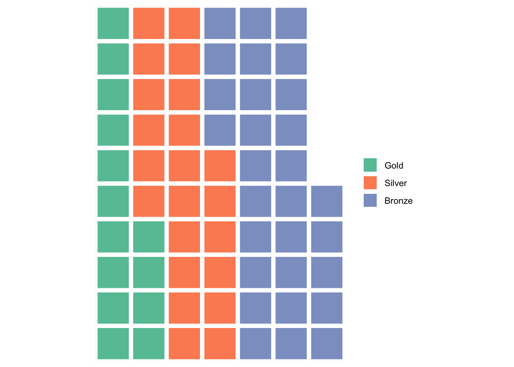
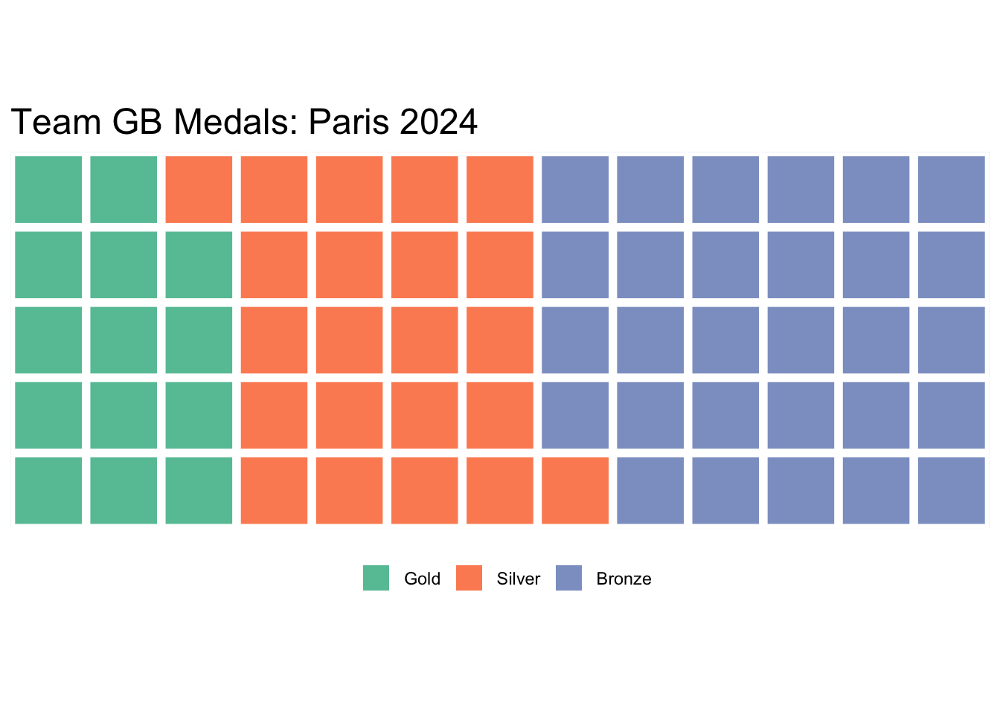
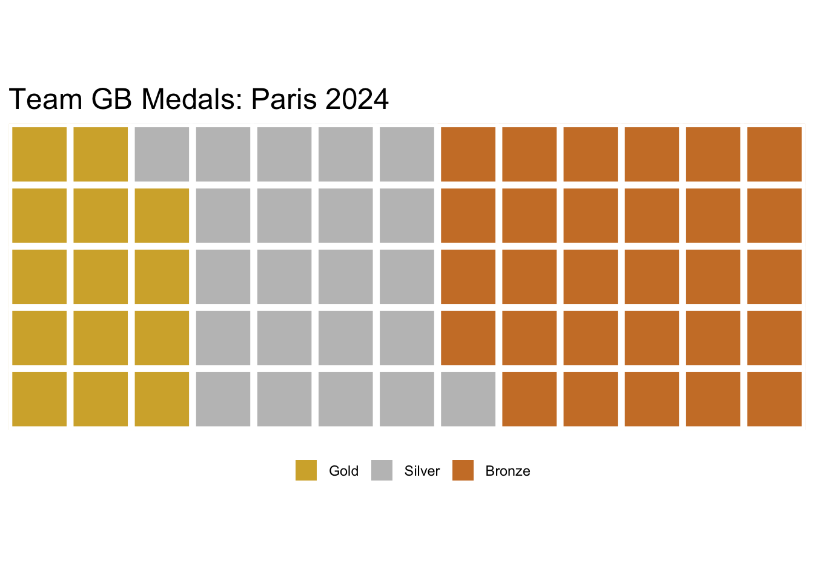
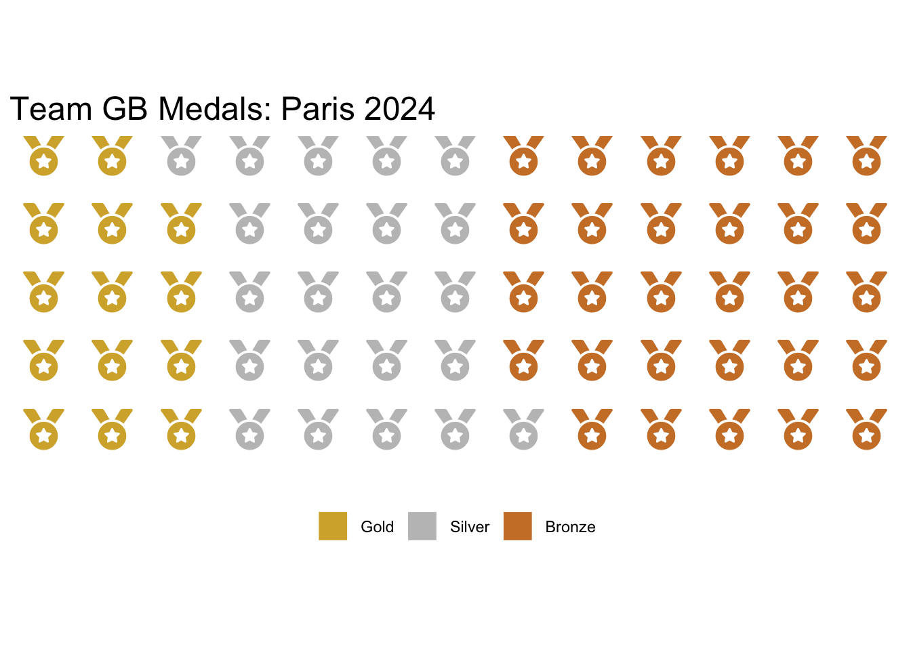
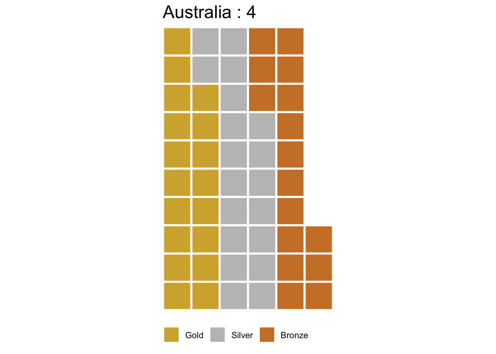
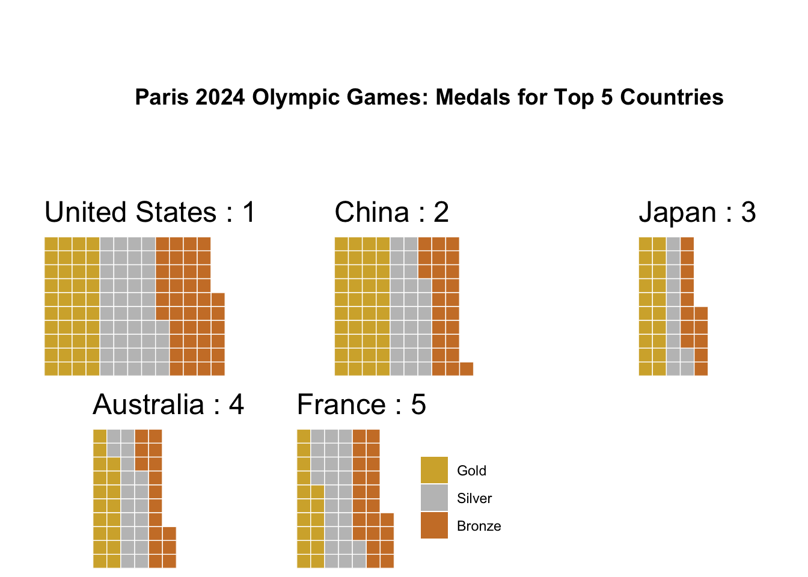
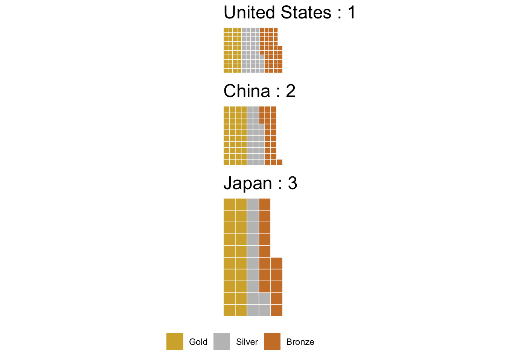

library(dplyr)
library(tidyr)
library(waffle) Creating Waffle Plots in R with Waffle
R
data visualisation
An introduction to waffle plots in R by looking at the 2024 Olympic Games.
Introduction
In this post we will be creating waffle plots with R, using the waffle() function from the package of the same name. In terms of necessary packages I would recommend dplyr(for the handy filter() and select() functions), tidyr (for the pivot_longer() function) and of course waffle (to allow us to create waffle plots).
Importing The Data
Waffle plots are best used to visualise count data, often as an alternative to something like a pie chart or bar chart. The data we will be using is a count of medals won at the Paris 2024 Olympic Games by country. This dataset is from Kaggle (which is a generally useful place to find datasets to practice data visualisation or machine learning) and can be found here.
Processing The Data
Out of the box the data looks as shown below.
# Import the data from a csv file
olympic_data <- read.csv('olympics2024.csv')
print(head(olympic_data)) Rank Country Country.Code Gold Silver Bronze Total
1 1 United States US 40 44 42 126
2 2 China CHN 40 27 24 91
3 3 Japan JPN 20 12 13 45
4 4 Australia AUS 18 19 16 53
5 5 France FRA 16 26 22 64
6 6 Netherlands NED 15 7 12 34This is great as there is not particularly any cleaning that we will need to do. It is worth getting rid of the Country.Code and Total columns however as we will not be needing these. We can do this with select(). We can see that Gold, Silver and Bronze and Rank are already integers but Country contains character variables. It won’t make a difference here but it’s generally better to convert this column to factors instead, as this is how we will be using it.
# Remove unwanted columns
olympic_data <- olympic_data |>
select(-c(Total, Country.Code))
# Convert country to factor
olympic_data$Country <- as.factor(olympic_data$Country)
# See the result
print(head(olympic_data)) Rank Country Gold Silver Bronze
1 1 United States 40 44 42
2 2 China 40 27 24
3 3 Japan 20 12 13
4 4 Australia 18 19 16
5 5 France 16 26 22
6 6 Netherlands 15 7 12This is great however to plot a waffle plot we will actually need our data to be in a slightly different form. We do this with pivot_longer().
When using pivot_longer() Remember to specify the columns in the order you would like them to appear in the plot.
long_data <- olympic_data |>
pivot_longer(
cols = c(Gold, Silver, Bronze),
names_to = "Medal",
values_to = "Count"
)Here is our new dataframe, each country now has three rows, one for each of the number of gold, silver and bronze medals won.
print(head(long_data))# A tibble: 6 × 4
Rank Country Medal Count
<int> <fct> <chr> <int>
1 1 United States Gold 40
2 1 United States Silver 44
3 1 United States Bronze 42
4 2 China Gold 40
5 2 China Silver 27
6 2 China Bronze 24Creating Waffle Plots
As mentioned earlier, the way we will be creating a waffle plot today is with the waffle() function. This function could not be more simple, we input a dataframe with a column of descriptions and a column of values and out comes a waffle plot!
To start let’s just consider Great Britain (using filter).
# Use filter to get just the data about GB
GB_data <- long_data |> filter(Country == 'Great Britain')
# Create the waffle plot,
waffle(data.frame(GB_data$Medal, GB_data$Count))
We could do with tidying this plot up a little and it would be nice to have the colours match “gold”, “silver” and “bronze”.
In general when making waffle plots it might also be nice to have as few “left over” squares as possible, meaning ideally we would want the total number of squares to be a multiple of the number of rows. We can do this by summing our Count column and looking for any factors which we can achieve concisely with the primeFactors() function from the numbers library.
library(numbers)
total <- sum(GB_data$Count)
print(primeFactors(total))[1] 5 13We can see that 5 is a prime factor of our total, meaning if we choose 5 rows we won’t be left with any “hanging squares”.
# Add a title, set the number of rows and change the legend position
waffle(data.frame(GB_data$Medal, GB_data$Count), rows = 5,
title = "Team GB Medals: Paris 2024",
legend_pos = "bottom")
We can change the colours with the colors argument.
waffle(data.frame(GB_data$Medal, GB_data$Count), rows = 5,
title = "Team GB Medals: Paris 2024",
legend_pos = "bottom",
colors = c('#d4af37', '#c0c0c0', '#cd7f32'))
There we have it, our first waffle plot! Each square represents a medal won.
We can also turn this plot into a pictogram, to do this you will need fontawesome installed on your computer. By default the medal glyph is a bit too large for this plot so we set its size manually to 8 with the glyph_size argument.
library(fontawesome)
waffle(data.frame(GB_data$Medal, GB_data$Count), rows = 5,
title = "Team GB Medals: Paris 2024",
legend_pos = "bottom",
colors = c('#d4af37', '#c0c0c0', '#cd7f32'),
use_glyph = 'medal', glyph_size = 8)
There’s nothing stopping us creating plots for different countries too. In fact we could show several on one plot using the iron function from the waffle package or using a function from another package such as plot_grid() from the cowplot package.
To simplify our code when doing this I’m also going to create a function to make us a waffle plot.
This function has one mandatory input, country, the country you wish to make the plot for. It has optional argument of data (I made this customisable in case we wished to plot for a different Olympic Games for example), legend_pos which we can use to make sure there’s only one legend for the plot and size in case we want to adjust this.
To create a title that gives each country and its rank we use paste() which is a way to concatenate strings in R.
country_waffle <- function(country, data = long_data, legend_pos = 'none', size = 0.25)
{
data <- data |> filter(data$Country == country)
plot <- waffle(data.frame(data$Medal, data$Count),
size = size, legend_pos = legend_pos,
keep = FALSE, colors = c('#d4af37', '#c0c0c0', '#cd7f32'),
title = paste(country, ':', data$Rank[1]))
return (plot)
}Let’s test that this works for Australia. We do need to adjust the size parameter to make this look great.
country_waffle("Australia", size = 1, legend_pos='bottom')
Perfect! Time to combine our plots. We will plot the top five countries with cowplot first.
library(cowplot)
# Filter long_data to find the top 5 countries,
# use unique to remove duplicates as each country has 3 rows.
top_countries <- filter(long_data,
Rank %in% c(1, 2, 3, 4, 5))$Country|> unique()
# Titles with cowplot are a bit awkward,
# to get around this we use ggdraw and create a plot that is just a title.
title <- ggdraw() +
draw_label(
"Paris 2024 Olympic Games: Medals for Top 5 Countries",
fontface = 'bold',
hjust = 0
)
# To get the layout we want we need to add two blank plots
# to the first row using geom_blank()
plot_grid(title, geom_blank(), geom_blank(),
country_waffle(top_countries[1]),
country_waffle(top_countries[2]),
country_waffle(top_countries[3]),
country_waffle(top_countries[4]),
country_waffle(top_countries[5],
legend_pos = 'right'), ncol=3)
Alternatively we could do this with the built in iron() function in waffle. I wanted to show both ways as something like plot_grid() is more customisable but it can be awkward to work with.
iron(country_waffle(top_countries[1]),
country_waffle(top_countries[2]),
country_waffle(top_countries[3],
legend_pos = 'bottom'))
The iron() function is better for a smaller number of plots as it can squish things quite a bit.
This isn’t the only way of creating waffle plots however, in a future post I will be looking at creating waffle plots with geom_waffle instead, waffle() is great for simple one off plots but geom_waffle is definitely the way to go when trying to do something a bit more complicated, such as this example from r-graph-gallery.com.